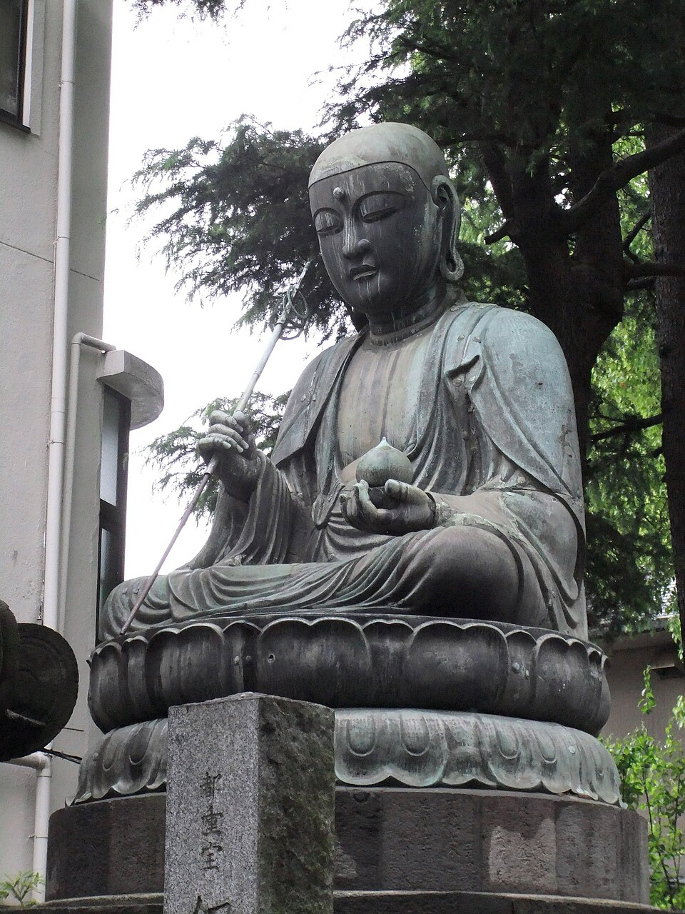
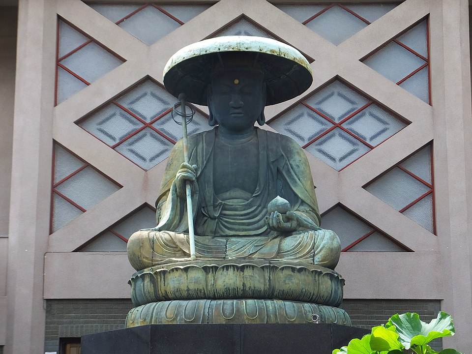
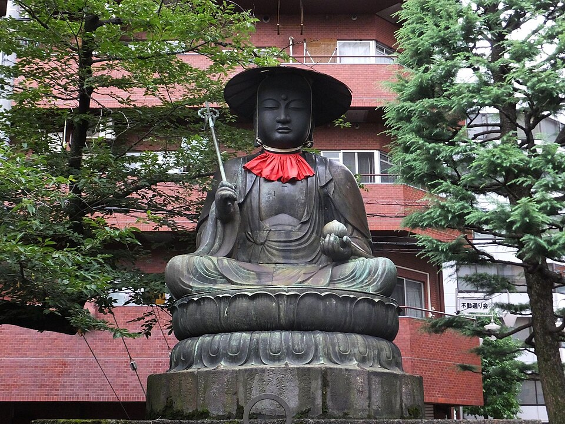
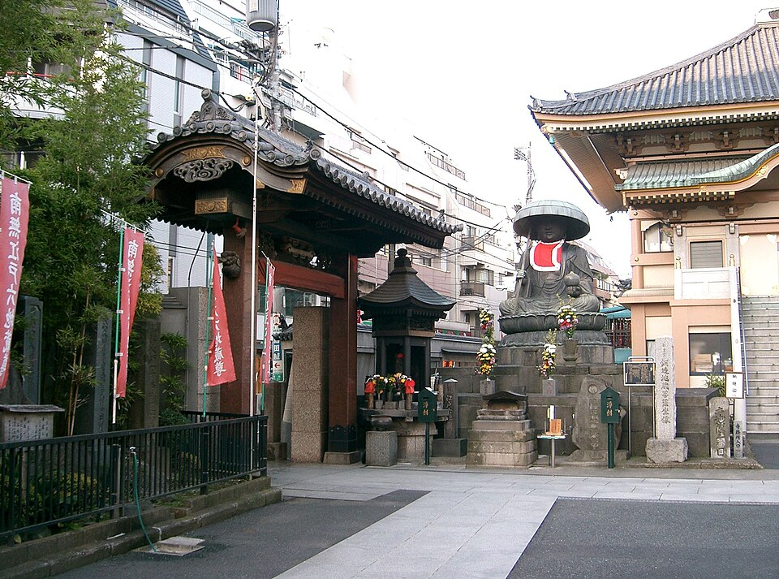
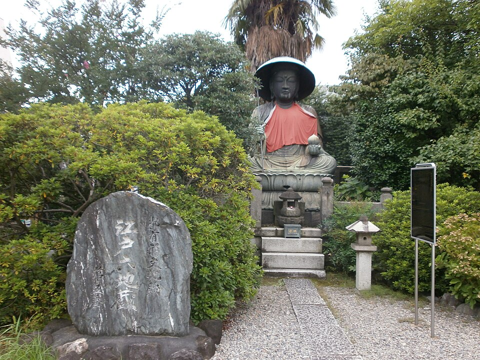
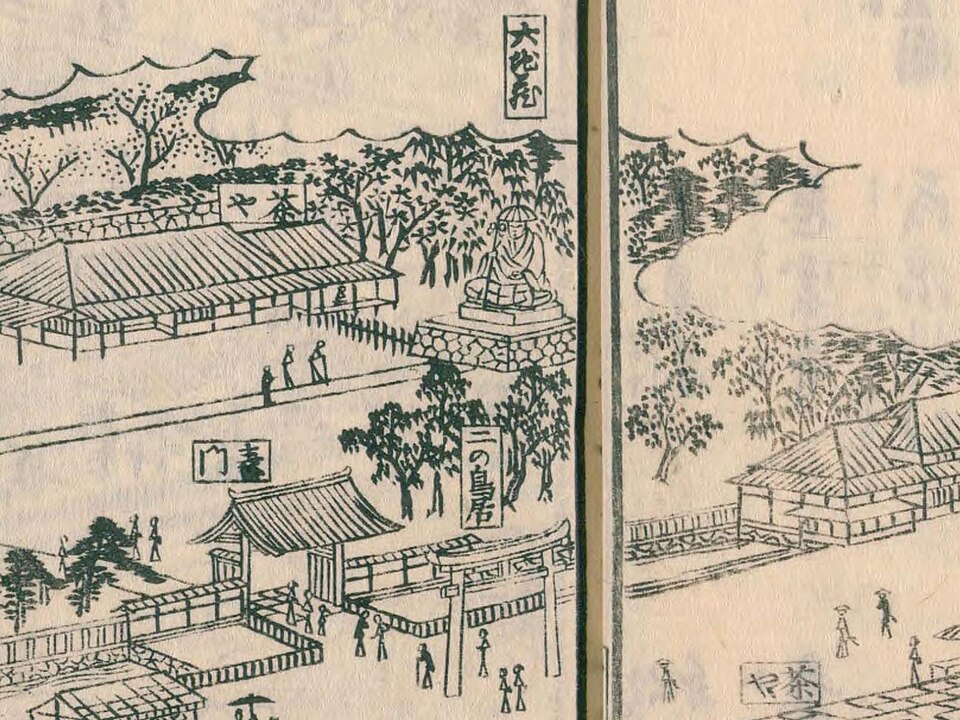

寶永三年（1706年），江戶深川一位名叫地藏坊正元的居士，年輕時曾身患重病，生死難料。他與雙親一同向地藏菩薩虔誠祈願，祈求病癒。奇蹟降臨，正元不僅康復，更立下宏願，要以實際行動回報地藏菩薩的慈悲。
他仰望京都六地藏的前例——平安時代平清盛命西光法師，於洛中洛外六條街道入口各建六角堂，供奉地藏尊以護佑旅人。正元決定仿照此例，在江戶通往各地的六條主要街道入口，各建立一座巨型青銅地藏菩薩坐像，守護出入江戶的旅人，同時祈願眾人無病消災、旅途平安。
正元走遍江戶市中，廣募善信布施。超過七萬兩千名寄進者的名字，至今仍鐫刻於各像的台座與蓮花之上，是江戶庶民信仰力量的珍貴見證。從宝永五年（1708年）到享保五年（1720年），歷時整整十二年，六座像高約270公分的「丈六」地藏菩薩像相繼完成。
六座地藏像如六位忠誠的守門神，分守江戶通往各方的要道。每一尊均為露天青銅坐像，像高約270公分（「丈六」），鑄造時曾施以鎏金，歲月流逝，今日大多僅餘金箔痕跡。






地藏菩薩（梵語：Kṣitigarbha），在日本民間信仰中是最親近庶民的菩薩之一。祂被認為是在釋迦涅槃之後、彌勒菩薩降世之前，於「無佛時代」中守護眾生、特別是救助亡魂與受苦孩童的菩薩。
在日本，石造或銅造的地藏像遍布各地路邊、寺院，人們以紅色涎掛（圍兜）為其裝扮，祈求子孫健康、旅途平安、亡者冥福。「六地藏」的傳統，源自佛教的「六道」概念——以六尊地藏分別守護地獄道、餓鬼道、畜生道、阿修羅道、人道、天道的六道眾生。
江戶六地藏尊的設立，正是將這一信仰與城市防護的概念結合：讓地藏菩薩坐鎮各街道入口，如守護神般庇佑進出江戶的萬千旅人與居民。七萬餘名的庶民寄進者，是整個江戶時代城市共同體信仰心的最佳象徵。
| 番號 | 街道 | 寺院 | 建立年 | 現狀 |
|---|---|---|---|---|
| 第一番 | 東海道 | 品川寺 | 宝永5年（1708） | ✓ 現存 |
| 第二番 | 奥州街道 | 東禅寺 | 宝永7年（1710） | ✓ 現存 |
| 第三番 | 甲州街道 | 太宗寺 | 正徳2年（1712） | ✓ 現存 |
| 第四番 | 中山道 | 眞性寺 | 正徳4年（1714） | ✓ 現存（東京都指定文化財） |
| 第五番 | 水戸街道 | 霊巖寺 | 享保2年（1717） | ✓ 現存 |
| 第六番 | 千葉街道 | 永代寺 → 浄名院（代佛） | 享保5年（1720） | ✗ 原像已毀（代佛存） |